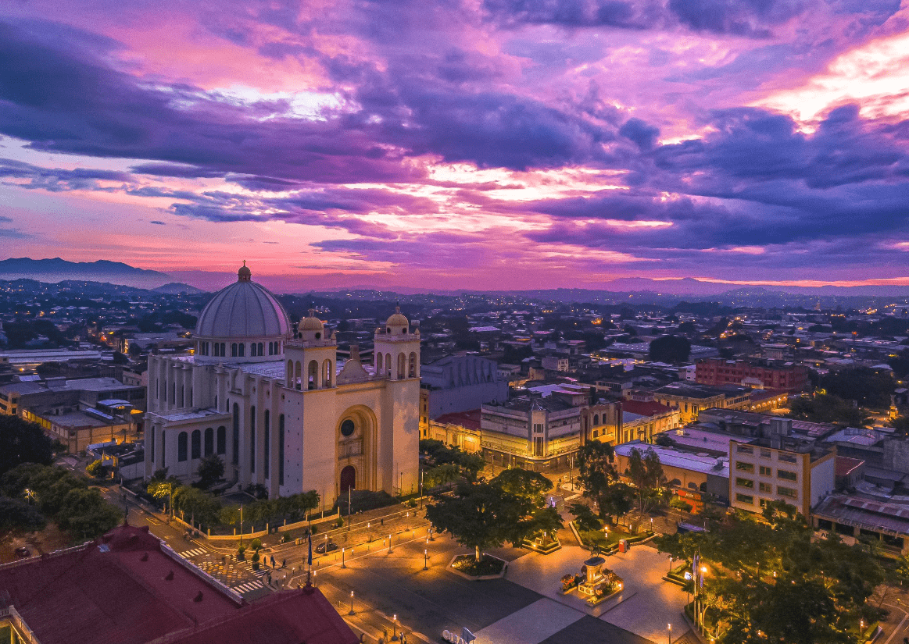
Ciudad, Montaña y Playa en un sólo día
Descubre la Ruta Arqueológica de El Salvador: Una inmersión en la historia maya. Este emocionante viaje te llevará a través de los tesoros arqueológicos de El Salvador, comenzando en Tazumal, donde encontrarás una pirámide escalonada y artefactos mayas. Luego, en San Andrés, explorarás antiguas estructuras y visitarás el Museo Nacional de Arqueología. Continúa hacia Joya de Cerén, conocida como la "Pompeya de América", para ver casas y objetos bien conservados. En Cihuatan, te maravillarás con enormes estructuras y esculturas mayas, y en Casa Blanca, descubrirás pirámides y una cancha de juego de pelota. Recuerda llevar ropa cómoda y probar la deliciosa comida salvadoreña mientras te sumerges en la rica historia maya en esta fascinante ruta arqueológica.

Descubre la Ruta Arqueológica de El Salvador: Una inmersión en la historia maya. Este emocionante viaje te llevará a través de los tesoros arqueológicos de El Salvador, comenzando en Tazumal, donde encontrarás una pirámide escalonada y artefactos mayas. Luego, en San Andrés, explorarás antiguas estructuras y visitarás el Museo Nacional de Arqueología. Continúa hacia Joya de Cerén, conocida como la "Pompeya de América", para ver casas y objetos bien conservados. En Cihuatan, te maravillarás con enormes estructuras y esculturas mayas, y en Casa Blanca, descubrirás pirámides y una cancha de juego de pelota. Recuerda llevar ropa cómoda y probar la deliciosa comida salvadoreña mientras te sumerges en la rica historia maya en esta fascinante ruta arqueológica.
 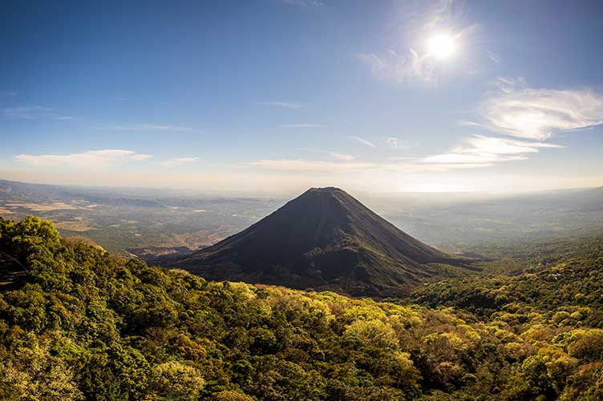
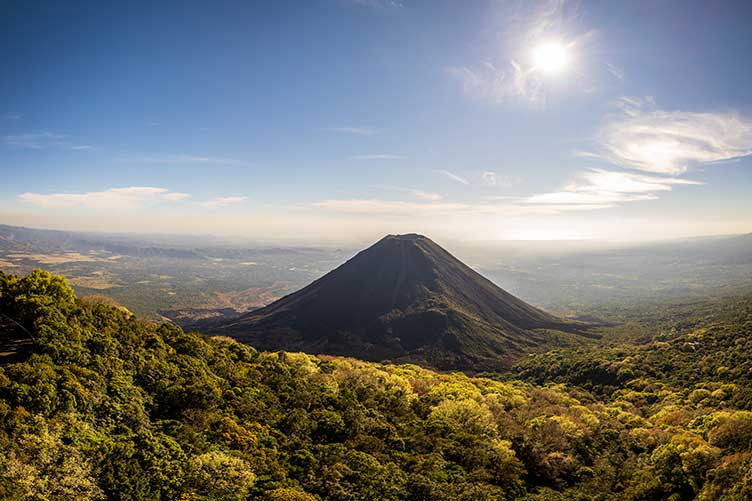

Descubre la Ruta Arqueológica de El Salvador: Una inmersión en la historia maya. Este emocionante viaje te llevará a través de los tesoros arqueológicos de El Salvador, comenzando en Tazumal, donde encontrarás una pirámide escalonada y artefactos mayas. Luego, en San Andrés, explorarás antiguas estructuras y visitarás el Museo Nacional de Arqueología. Continúa hacia Joya de Cerén, conocida como la "Pompeya de América", para ver casas y objetos bien conservados. En Cihuatan, te maravillarás con enormes estructuras y esculturas mayas, y en Casa Blanca, descubrirás pirámides y una cancha de juego de pelota. Recuerda llevar ropa cómoda y probar la deliciosa comida salvadoreña mientras te sumerges en la rica historia maya en esta fascinante ruta arqueológica.
 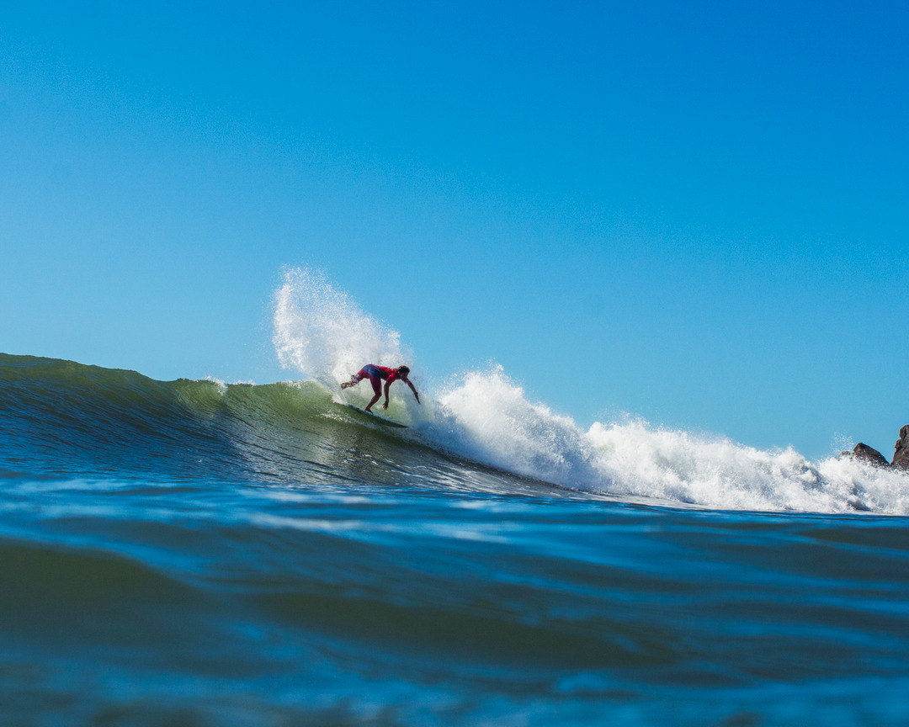
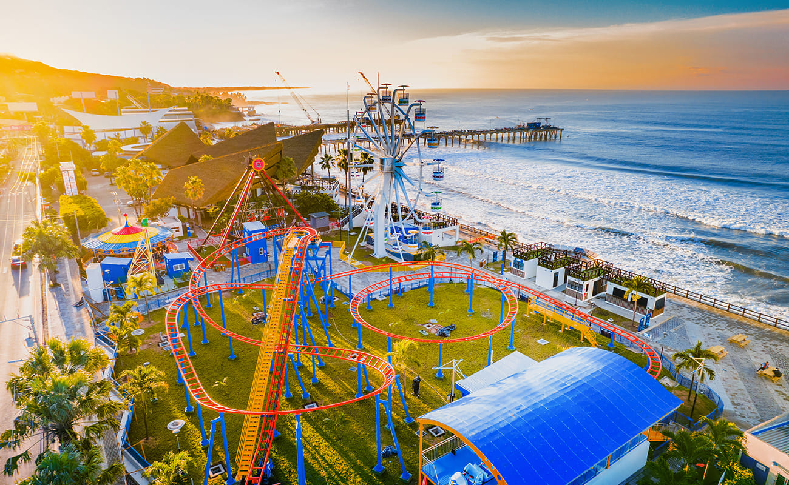
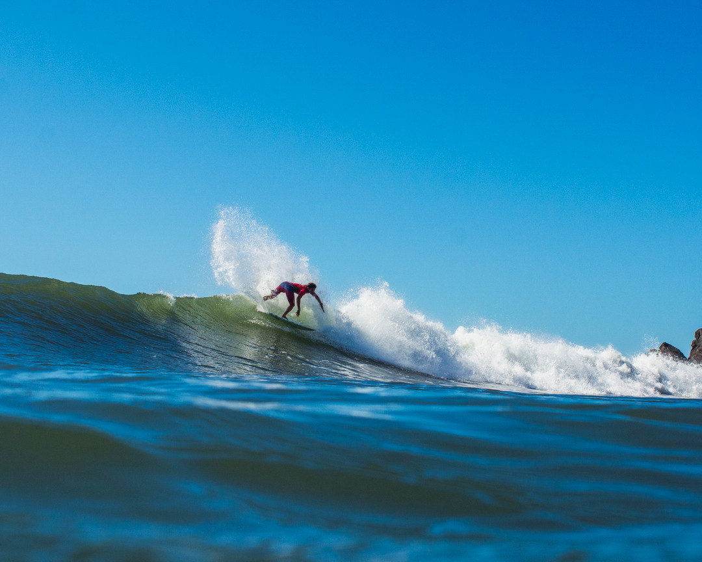
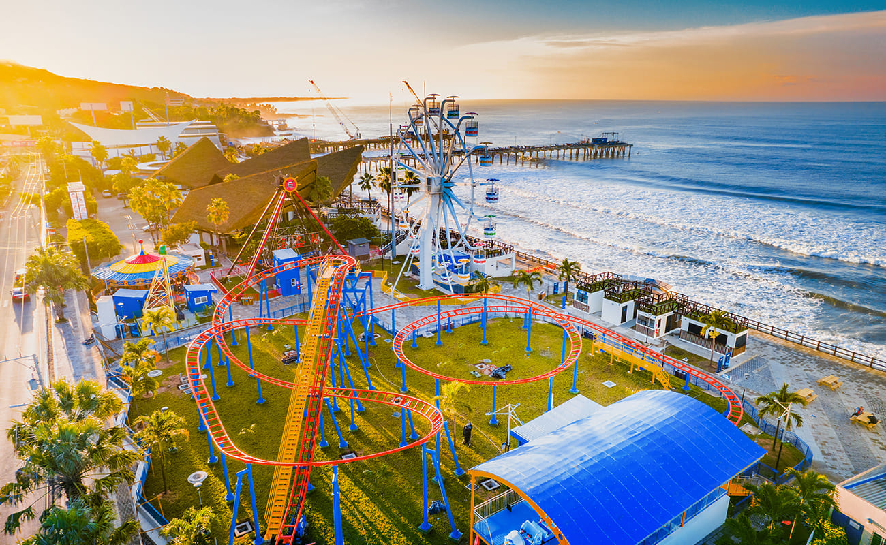

Comprende el área donde se inició la expansión de la ciudad capital de El Salvador desde el siglo xvi. Las edificaciones originales de la colonia española fueron en su mayor parte destruidas por desastres naturales a lo largo de los años, y los inmuebles notables que sobreviven fueron erigidos a finales del siglo xix, e inicios del XX. Además, el lugar fue durante mucho tiempo el centro de poder político, económico y religioso del país.
Explorar mas... 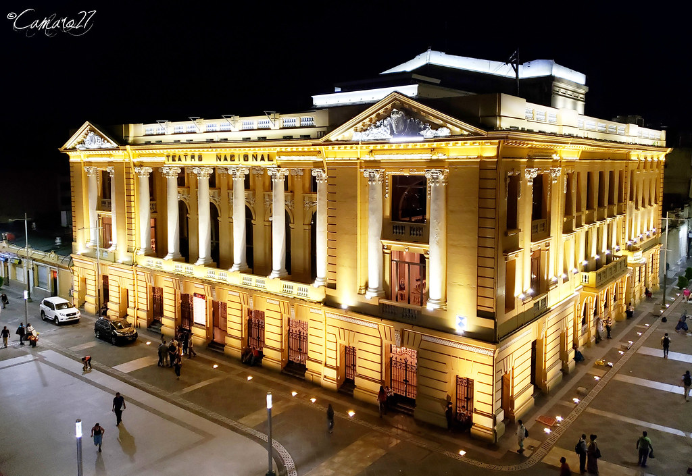
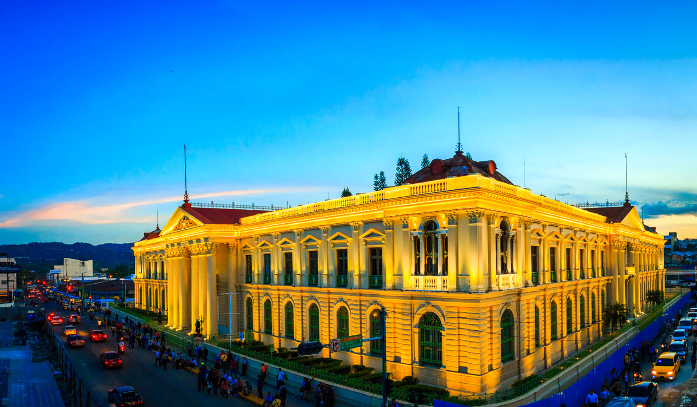
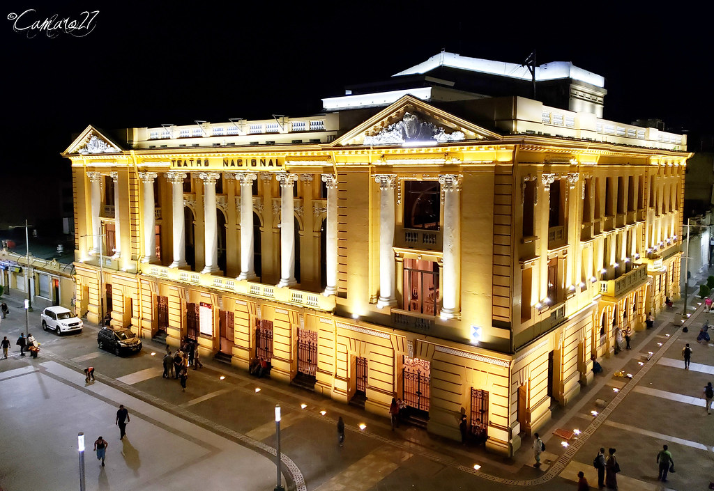
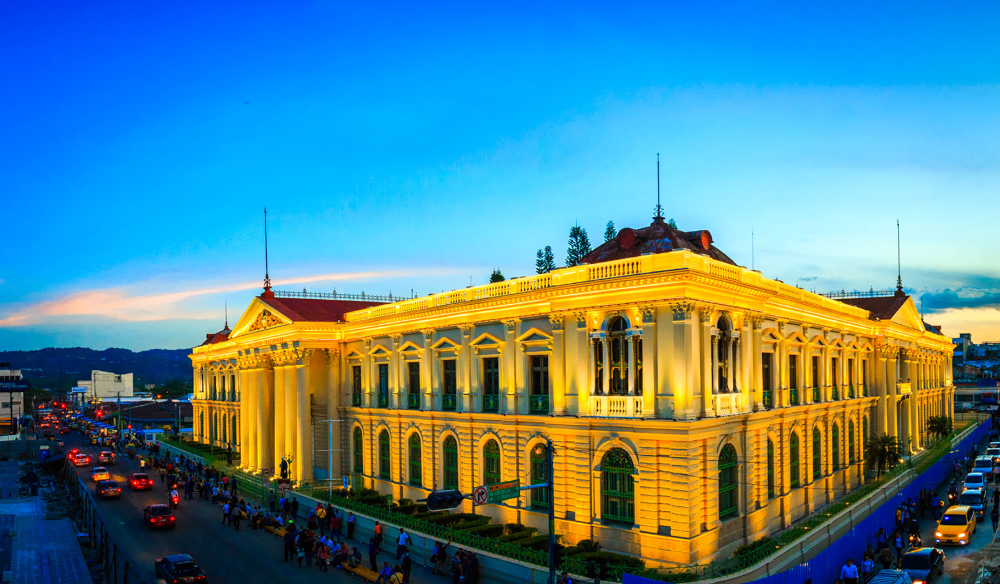